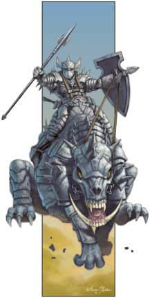

大型魔法兽 (跨位面)

| 生命骰： | 9d10+36 (85 hp) |
| 先攻： | +0 |
| 速度： | 40 英尺（着全身甲马铠时）；基础 60 英尺，攀爬 30 英尺 |
| 防御等级： | 25（�C1 体型，+10 +2 全身甲马铠，+6 天生），接触 9，措手不及 25 |
| 基本攻击／擒抱： | +9/+18 |
| 攻击： | 抵撞 +13 近战 |
| 全力攻击： | 抵撞 +13 近战 和 甲刺 +8 近战 和 2 踢击 +8 近战 |
| 伤害： | 抵撞 2d6+5，甲刺 1d8+2，踢击 2d4+2 |
| 面宽／触及： | 10 英尺/5 英尺 |
| 特殊攻击： | 冲锋，电能力场，践踏 |
| 特殊能力： | 黑暗视觉 60 英尺，免疫，昏暗视觉，共享防御 |
| 豁免： | 强韧 +10，反射 +6，意志 +5 |
| 属性： | 力量 21，敏捷 10，体质 19，智力 5，感知 14，魅力 10 |
| 技能： | 攀爬 +17，威吓 +4，跳跃 +9 |
| 专长： | 战斗反射，坚忍，猛力攻击，快跑 |
| 地域： | 任意平原或丘陵 (外域) |
| 组织： | 单独，成对，或群 (5�C20) |
| 挑战等级： | 8 |
| 宝物： | ― |
| 阵营： | 总是中立 |
| 进化： | 10�C24 HD (超大型), 25�C27 HD (巨型) |
巨大的库尔杜拉斯常被见到作为铁魔像里尔玛尼rilmani（本书后文描述）的坐骑。一头库尔杜拉斯身长近 14 英尺，肩高 8 英尺，重达 7,500 磅。它的外形类似于犀牛，但腿部更长且肌肉更发达，并且没有犀牛那样的角；取而代之的是一对巨大锋利的獠牙。库尔杜拉斯的后腿比前腿肌肉更发达且更灵活，使其能够以巨大力量跳跃和踢击。一头奔跑的库尔杜拉斯看起来类似于奔跑的兔子，尽管更具威胁性。这种生物覆盖着铁灰色的鳞片，大多数库尔杜拉斯还穿着 +2 全身甲马铠。
库尔杜拉斯理解木族语但不会说任何语言。
库尔杜拉斯会激烈地保护其族群免受攻击，但它们没有领地意识，也不介意友善或态度不明的生物在它们中间。当被骑乘时，库尔杜拉斯可以成为可怕的对手。被铁魔像里尔玛尼骑乘的库尔杜拉斯会根据需要使用其威吓技能检定加值来协助铁魔像的威吓检定。
冲锋 (Charge) (Ex)：库尔杜拉斯通常通过向对手冲锋来开始一场战斗。除了冲锋的正常益处和危险外，此战术使库尔杜拉斯能在成功的抵撞攻击中造成双倍伤害。
电能力场 (Electricity Aura) (Su)：每天三次以自由动作，库尔杜拉斯可以释放强大的电能力场。30 英尺范围内的所有生物每轮都必须进行反射豁免（DC 18），否则受到 2d6 点闪电伤害。
践踏 (Trample) (Ex)：作为一个标准动作，库尔杜拉斯可以践踏至少比它小一个体型等级的对手。此攻击造成 2d6+5 点钝击伤害。被践踏的对手可以选择进行一次承受 �C4 罚值的借机攻击，或进行一次反射豁免（DC 19）来使伤害减半。
共享防御 (Share Defenses) (Su)：库尔杜拉斯自动获得其骑手的伤害减免和能量抗力益处，以及任何距离为个人的法术效果。
免疫 (Immunities) (Ex)：库尔杜拉斯免疫电击伤害和影响心灵的效果。
技能：库尔杜拉斯在攀爬检定上拥有 +8 种族加值，并且在进行攀爬检定时总是可以选择取 10，即使匆忙或受到威胁。